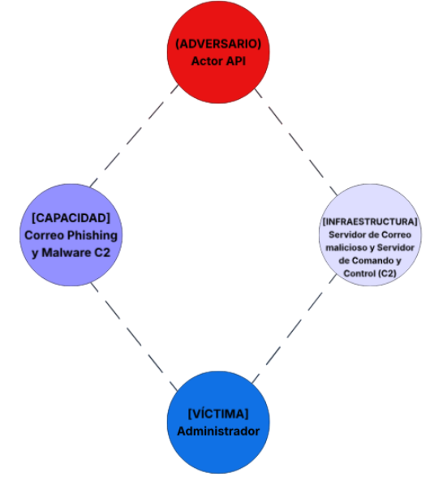
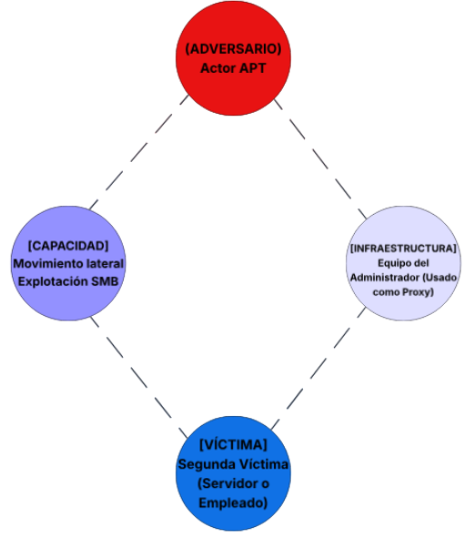
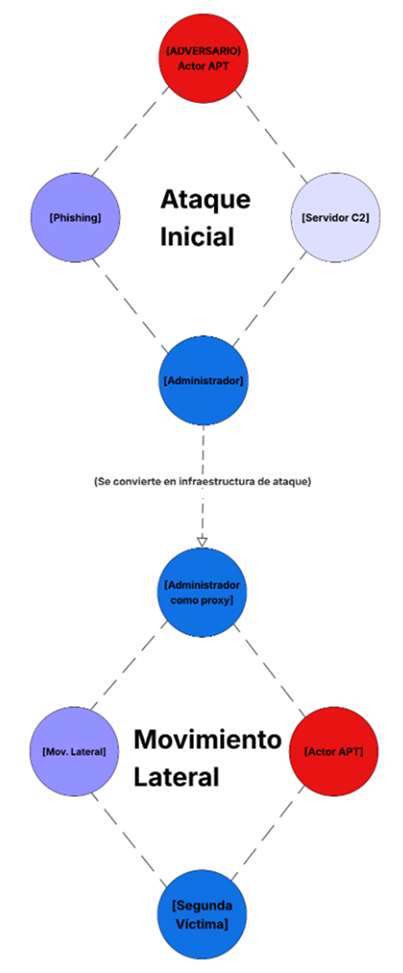

UNIVERSIDAD POLITÉCNICA DE SAN LUIS POTOSÍ
Curso: Núcleo Optativo V: Seguridad Informática
Rodríguez Moreno Cristian Alejandro | Matrícula: 181641
Docente: Mtro. Servando López Contreras | Grupo: T46A
El Modelo del Diamante para el análisis de intrusiones es un marco formal que describe cada incidente de intrusión cibernética a través de cuatro elementos interconectados (el adversario, la capacidad, la infraestructura y la víctima) dispuestos en forma de diamante para permitir un análisis estructurado de la inteligencia sobre amenazas basado en las relaciones.
| Elemento | Descripción | Ejemplo Práctico |
|---|---|---|
| Adversario | El actor o grupo malicioso responsable de la intrusión. Puede tratarse desde un grupo APT concreto hasta un actor desconocido identificado únicamente por sus patrones de comportamiento. | Un grupo de cibercrimen con motivaciones financieras o un estado-nación buscando espionaje. |
| Capacidad | Describe las herramientas, técnicas y procedimientos (TTP) utilizados por el adversario para ejecutar el evento. | Uso de un malware tipo Ransomware, scripts en PowerShell o un exploit de día cero (0-day). |
| Infraestructura | Son los recursos lógicos y físicos que el adversario utiliza para entregar la capacidad y comunicarse. | Servidores de Comando y Control (C2), dominios maliciosos registrados o direcciones IP de una botnet. |
| Víctima | El objetivo del ataque. Puede ser una organización, un usuario específico, una dirección IP o un activo crítico (base de datos). | El servidor de bases de datos de una institución financiera o el endpoint de un empleado administrativo. |
Escenario: Una organización detecta comportamiento anómalo en un equipo. El análisis revela:
| Meta característica | Descripción del evento |
|---|---|
| Marca de tiempo | Fecha y hora exacta registrada en los logs de red y del antivirus (necesaria para la línea del tiempo). |
| Fase | Command and Control (C2) y Actions on Objectives. El malware ya está instalado y busca instrucciones externas. |
| Resultado | Éxito parcial/total. El malware se ejecutó y logró contactar a la infraestructura del adversario; existe riesgo de exfiltración. |
| Dirección | El tráfico fluye desde la red interna (víctima) hacia las IPs externas (infraestructura). |
| Metodología | Beaconing. Comunicación persistente y periódica entre el host infectado y el C2 para recibir comandos. |
| Recursos | Capacidad del malware para resolver nombres de dominio (DNS) y establecer túneles de comunicación cifrada. |
1. ¿Quién es el adversario en este escenario?
Aunque la identidad real suele ser difícil de atribuir, el adversario se define por el actor o grupo de amenazas identificado mediante la geolocalización de las IPs y los datos de registro de los dominios (WHOIS). Técnicamente, se describe como el Threat Actor con la infraestructura de C2 activa.
2. ¿Cuál es la capacidad utilizada?
La capacidad es el malware persistente detectado en los endpoints. Esta incluye funciones de evasión y, específicamente, la capacidad de comunicación mediante balizas (beaconing) para contactar con los dominios de Comando y Control (C2).
3. ¿Qué tipo de infraestructura se emplea?
Se emplea una Infraestructura de Comando y Control (C2) de nivel 2. Esta consiste en nombres de dominio maliciosos y direcciones IP externas que actúan como puntos de recepción de datos y envío de instrucciones.
4. ¿Quién es la víctima primaria?
La víctima primaria es el host inicial donde se detectó el malware. Sin embargo, en el modelo diamante, la organización completa es considerada la víctima de nivel superior, mientras que los activos específicos (servidores/equipos) son las víctimas de nivel técnico.
5. ¿Existe evidencia de movimiento lateral?
Sí. El hecho de que los logs muestren "múltiples hosts" conectándose a las mismas IPs de C2 sugiere que el malware se ha propagado internamente (movimiento lateral) o que se realizó un despliegue masivo tras comprometer un controlador de dominio o mediante herramientas de administración.
Fase 1: Reconocimiento (Reconnaissance)
En esta etapa, el atacante recopila información sobre el objetivo. Esto puede incluir la identificación de empleados, sistemas vulnerables, y cualquier otra información que pueda ser útil para el ataque.
Fase 2: Armamento (Weaponization)
El atacante utiliza la información recopilada durante la fase de reconocimiento para desarrollar o adaptar un arma cibernética que explotará las vulnerabilidades específicas del objetivo.
Fase 3: Entrega (Delivery)
En esta fase, el malware se transmite al objetivo. Los vectores de entrega comunes incluyen:
Fase 4: Explotación (Exploitation)
Una vez que el malware se ha entregado con éxito, la fase de explotación se centra en activar el código malicioso.
Fase 5: Instalación (Installation)
Tras la explotación exitosa, la fase de instalación se centra en establecer una presencia persistente en el sistema comprometido. El objetivo es asegurar el acceso continuo, incluso si el sistema se reinicia o el usuario cierra sesión.
Fase 6: Comando y Control (Command and Control)
Una vez que el atacante ha establecido una presencia persistente, la fase de Comando y Control (C&C) se centra en establecer y mantener una comunicación con el sistema comprometido.
Fase 7: Acciones sobre el Objetivo (Actions on Objectives)
En la fase final, el atacante lleva a cabo los objetivos del ataque, que pueden incluir:
| Evento | Fase Kill Chain |
|---|---|
| Detección de malware | Entrega (Delivery): El atacante transmite el vector de ataque al objetivo (correo malicioso). |
| Envío de phishing | Explotación / Instalación: El código malicioso se activa aprovechando una vulnerabilidad o acción del usuario. |
| Conexión a C2 | Comando y Control: El sistema comprometido abre un canal de comunicación con el atacante. |
| Ejecución del malware | Post-Intrusión: No es una fase del atacante, sino el punto de interrupción (Break the Chain) por parte de la defensa. |
Con base en el siguiente escenario tipo APT:
• Hilo 1 (Víctima 1).
Descripción: Un administrador (Víctima 1) recibe un correo de phishing dirigido. Al ejecutar el archivo, se instala un malware que establece una conexión persistente a un servidor C2.
Ejes del Diamante: Adversario (APT) → Capacidad (Malware) → Infraestructura (C2) → Víctima (Admin).
• Hilo 2 (Víctima 2).
Descripción: El atacante utiliza el host del administrador como un Proxy para ocultar su rastro y saltar las protecciones perimetrales. Desde aquí, lanza un ataque hacia la base de datos o el servidor financiero (Víctima 2).
Ejes del Diamante: El host de la Víctima 1 ahora forma parte de la Infraestructura del atacante para alcanzar a la Víctima 2.
• Relación entre ambos (pivoting)
El Pivoting es la técnica donde el atacante usa un sistema comprometido para atacar otros sistemas en la misma red o en redes diferentes que no eran accesibles directamente desde internet. La relación es de Infraestructura-Víctima: lo que para el primer hilo era la víctima, para el segundo se convierte en infraestructura de ataque.


